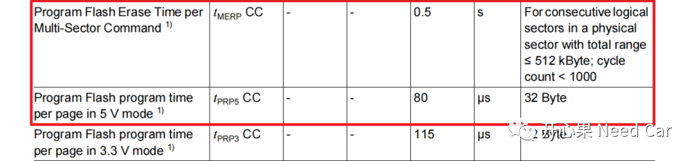
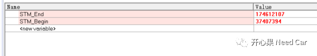
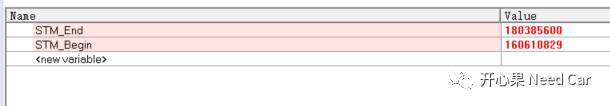
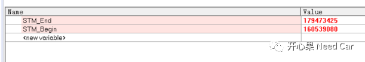
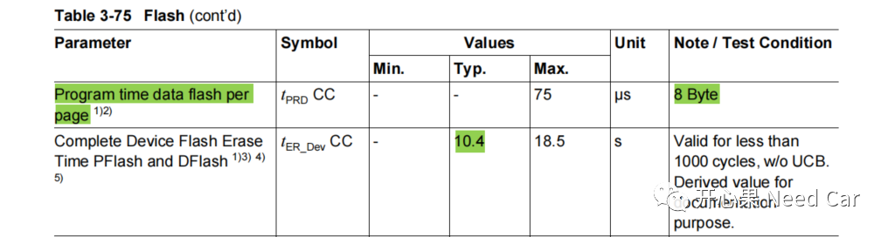
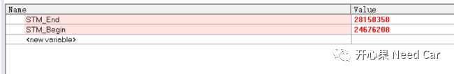
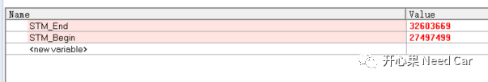
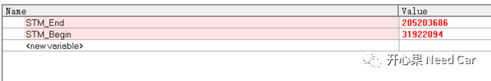
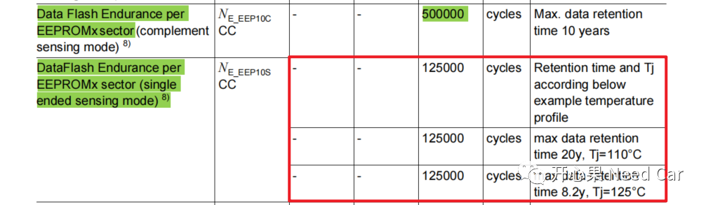

开心果 Need Car · 2022-11-01T13:52:00+08:00 · 微信原文
......

1、使用STM模块计时验证
一、编程时间验证
程序代码示意：
STM_Begin = IfxStm_now();/* Write 512 KBytes Data，1 Page = 32 Bytes */for(index = 0; index < 32;index++){/* Write PFlash1,Start Address 0x80400000 */writeAddr = (uint32)(0x80400000 + index*(0x4000));writePFLASH_NORAM(writeAddr, IfxFlash_FlashType_P1);}IfxFlash_waitUnbusy(0,IfxFlash_FlashType_P1);STM_End = IfxStm_now();
运行时间 = （174612107 - 37407394）/ 100000000 *1000 ≈ 1372.05ms。
刷写512KBytes数据的理论用时 = 512*1024/32*80/1000 = 1310.72ms。
结论：DataSheet中，PFlash编程时间和实际测试吻合。
提示：STM的时钟频率100MHz。刷写时间Debug记录如下所示：

二、擦除单个Logical Sector与多个Logical Sector时间验证
（1）多个Logical Sector擦除程序代码示意：
STM_Begin = IfxStm_now();32);IfxFlash_waitUnbusy(0,IfxFlash_FlashType_P1);STM_End = IfxStm_now();
注意：PFlash擦除操作中，擦除的扇区不要超过512KByte，每个逻辑扇区16KByte，即擦除的逻辑扇区个数，一次不要超过32，否则会报Sequence Error (SQER)。
运行时间 = （180385600 - 160610829）/100000000*1000 ≈ 197.75ms，如下所示：

（2）单个Logical Sector擦除程序代码示意：
STM_Begin = IfxStm_now();1);IfxFlash_waitUnbusy(0,IfxFlash_FlashType_P1);STM_End = IfxStm_now();
运行时间 = （179473425 - 160539080）/100000000*1000 ≈ 189.34ms，如下所示：

结论：擦除PFlash的单个扇区或者多个扇区，用时近乎相等，小于手册中的0.5s。
对于DFlash，逻辑扇区的划分有两种模式：Single Ended Mode（单端模式）和Complement Sensing Mode。
Single Ended Mode：每个逻辑扇区的大小为4Kbyte；
Complement Sensing Mode：每个逻辑扇区的大小为2Kbyte。
提示：本文基于Single Ended Mode讨论。
手册中的参数如下所示：

1、DFlash擦除时间验证
（1）单个逻辑擦除时间验证，代码示意：
STM_Begin = IfxStm_now();1);IfxFlash_waitUnbusy(0,IfxFlash_FlashType_D0);STM_End = IfxStm_now();
运行时间 = （28150358 - 24676208）/100000000*1000 ≈ 34.74ms。

（2）多个逻辑擦除时间验证，代码示意：
STM_Begin = IfxStm_now();64);IfxFlash_waitUnbusy(0,IfxFlash_FlashType_D0);STM_End = IfxStm_now();

2、DFlash编程时间验证
STM_Begin = IfxStm_now();/* Write 256KBytes Data */for(index = 0; index < 64;index++){/* Write DFlash0,Start Address 0xAF000000 */writeAddr = (uint32)(0xAF000000 + index*(0x1000));writeDFLASH_NORAM(writeAddr, IfxFlash_FlashType_D0);}IfxFlash_waitUnbusy(0,IfxFlash_FlashType_D0);STM_End = IfxStm_now();
提示：DFlash写操作时，每次待写的数据（1 Page = 8 Byte）要先写入ASB（Assembly Buffer），ASB一次写入8 Byte。
运行时间 = （205203686 - 31922094）/100000000*1000 = 1732.82ms。
理论计算时间 = 256 * 1024 / 8 * 75 = 2457.6ms。

结论：DFlash的写操作中，256Kbyte的实际用时小于手册参考值。如果工程中，在While(1)中，一直写操作，一个256Kbyte的Bank（页）用时不过2s左右。
本文通过试验PFlash/DFlash擦/写，对比了实际用时与手册参考值，实际的工程设计中，涉及时间参数时，可以集合手册计算代码的用时是否满足项目需求。本文的Flash驱动简单，并不是标准MCAL，由于MCAL的写法更安全规范，代码量更大，调用标准的MCAL用时会多一些。
在App程序中，为了不影响程序的正常运行，Flash的读/写操作会选择异步操作，所用时间要远高于本文提到的时间；在Bootloader中，升级App时，一般选择while(1)中擦/写动作。
3、DFlash(EEPROM)的使用寿命
Single Ended Mode模式下，使用DFlash模拟EEPROM，每个逻辑扇区的最大擦除次数是125000次，如下所示：

往期精彩回顾